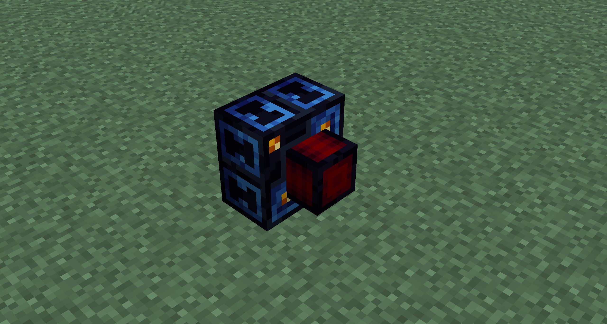
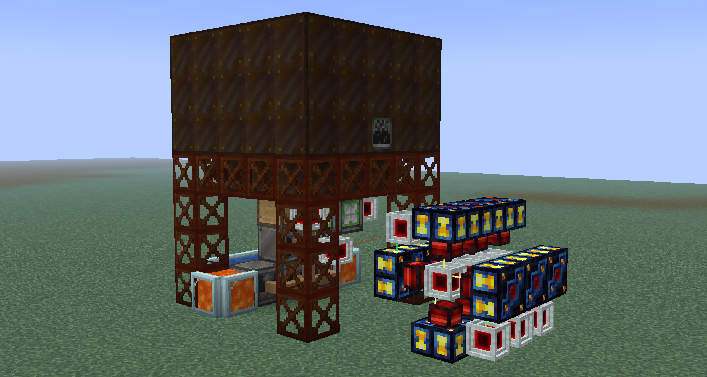
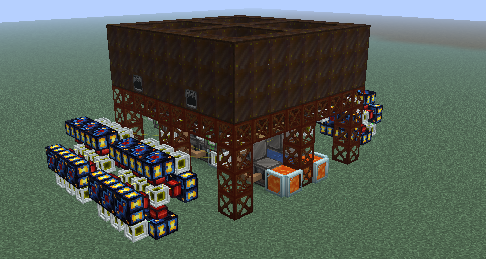

Dynamos
Guide by: humanoferth
Dynamos are a type of block added by Thermal that can generate power. They are often used from
Stirling Dynamos use furnace fuel as an input. This is the first dynamo that you can use and are a decent choice for an intial power source.
Compression Dynamos take fluid fuels as their input. While these can be better then the singleblock turbines from gregtech, they are difficult to set up early on and you have much better options.
Lapidary Dynamos use gems as an input to generate power. Out of the three dynamo options, these are the best in terms of ease of setup and maximum power output. These are gated by the assembler and require cobalt brass to craft.
I strongly recommend you use lapidary dynamos as your primary power source if you want to use dynamos for power. It is much easier to scale then the other two sources and will last you a long time, at least until you get better power sources like Nitrobenzene. To make the initial power required to get the lapidary dynamo, stirling dynamos are an option, though I advise against trying to scale them since they are highly inefficient. I strongly advise against using the compression dynamo since it requires much more infrastructure and processing then the lapidary dynamo does, and by the time you can get fuel for it easily you'll have other options.
Anatomy of a dynamo
Dynamos only output power on the red piece protruding out. It won't output power on any other ends. Similarly, you can't input items on the red piece protruding out, although there are ways to get around this with LaserIO.

Calculating Fuel Consumption and FE/t
Without augments, dynamos produce 200 FE/t (4000 FE/s). Fuel consumption can be calculated by dividing the total FE produced by one item (Found in EMI) or bucket of fuel by the FE/s your dynamo is currently producing (factoring in augments). For example, a diamond produces a total of 300,000 FE, as found in EMI. Dividing this by 4000 (FE/s produced by a lapidary dynamo with no augments) gives 1 diamond consumed every 75 seconds. Below are a list of augments and how they effect fuel consumption and power production.
Upgrade kits scale machines they are in by some scale factor. In dynamos, this means that they multiply power production and fuel consumption by that scale factor. If, for example, a lapidary dynamo is being fueled by diamonds (produces 300,000 RF each) had an
Each tier of upgrade kit will have a scale factor 2x larger then the last, starting at 6 in
Auxillery Reaction Chamber Kits (ARC's) additively increase power output at the cost of a multiplicative increase in fuel energy. Its really important to keep in mind that these effects are compounding. If, for example, a lapidary dynamo is being fueled by diamonds (produces 300,000 RF each) had an
Each tier of ARC will decrease fuel the fuel energy multiplier by .1 while increasing fuel energy by 100% (except for
Multi-cycle Injector Kits (MCI's) multaplicatively decrease fuel consumption without affecting power output. If, for example, a lapidary dynamo is being fueled by diamonds (produces 300,000 RF each) had an
Each tier of MCI increases the fuel energy multipler by .15 starting at 1.15x in
MCI's are better than ARC's since you MCI's just gives fuel more energy at no cost. While ARC's output more power, this increase in power also increases the speed at which fuel is consumed on top of the decrease in fuel. Using the numbers above, a lapidary dynamo with three
To better quantify this, suppose you were producing 1 diamond per second. Using 3
Optimally, for a dynamo you'll want to have an upgrade kit and three MCI's of the highest tier you can afford in your dynamos. The upgrade kit will increase power output to help reduce dynamo spam while the MCI's will help alleviate the increases in fuel consumption. Using ARC's will just require you to make more fuel much faster due to the compounding effects, which is especially an issue as fuel will later cost energy itself to make.
Example Lapidary setup
This setup below is incredibly simple but outputs a massive amount of power (445A

It uses 2
It is also slightly positive on fuel to ensure no downtime. This setup can be wallshared on its left, right, and back and can be expanded infinitely to the left and right. Here it is quaded:

If everything is scaled to
Calculators and Credits
- This calculator can be helpful for doing calculations.
- Be sure to check out c-rad's guide on discord for more.